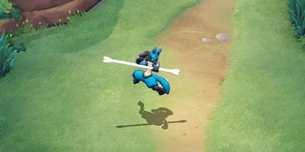
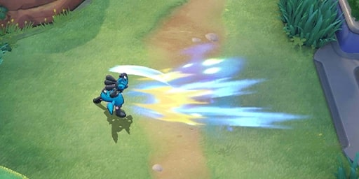
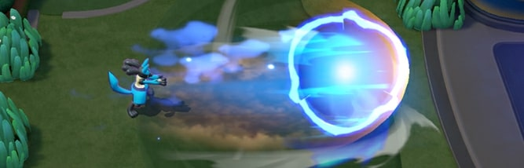

Lucario est un personnage polyvalent joué principalement en "toplane" (voir guide)
Attaque du personnage :

"EXTREME SPEED"
débloqué à sont level 5 Lucario se précipite vers l’avant,
endommageant tous les ennemis touchés et guérissant Lucario
pour chaque coup ennemi.
Le premier coup ennemi réinitialisera le refroidissement de extreme speed.
Cet effet ne peut pas se produire sur la même cible plus
d’une fois toutes les 10.
Attaquer immédiatement après le tiret effectuera une attaque unique
dans une zone traitant 75 pourcent d’Atk et peut frapper de manière critique.
Dommage:
%%% 225pourcent Atk + 6 x (Niveau - 1) + 280
Guérison:
45pourcent Atk + 1 x (Niveau - 1) + 56
%%%
-------------------------------------------------------------------------------------------------------------------------------------------------------------------------------------------
%%% 
"Bone rush"
Lucario frappe rapidement avec un os, endommageant les ennemis frappés jusqu’à 6 fois.
Les ennemis à longue portée seront touchés 3 fois et à courte distance, ils seront touchés 6 fois.
Lucario jette ensuite l’os après la frappe finale,
poussant les ennemis et provoquant l’atterrissage de
l’os à une courte distance.
Lucario peut réactiver Bone Rush pour se téléporter vers l’os,
les ennemis dans une petite zone autour
de lui.
L’atterrissage de l’une des frappes initiales de Bone Rush réinitialisera la minuterie de refroidissement
pour une vitesse extrême sur cette cible.
 
-------------------------------------------------------------------------------------------------------------------------------------------------------------------------------------------

"Aura sphère" (capacité spécial)
Aura Cannon n’a pas de limite au nombre de fois qu’il peut atteindre une cible,
il inflige plutôt des dégâts aux ennemis dans sa zone pendant qu’il se déplace, gagnant en vitesse.
À courte distance, un ennemi immobile peut être touché jusqu’à 4 fois et lorsque le canon est à la vitesse
maximale,
un ennemi immobile ne sera frappé que deux fois. Les dégâts du prochain Power-Up Punch sont augmentés
d’environ 20pourcent,
et les ennemis touchés par le canon ont leur refroidissement interne pour la réinitialisation de la vitesse
extrême.
